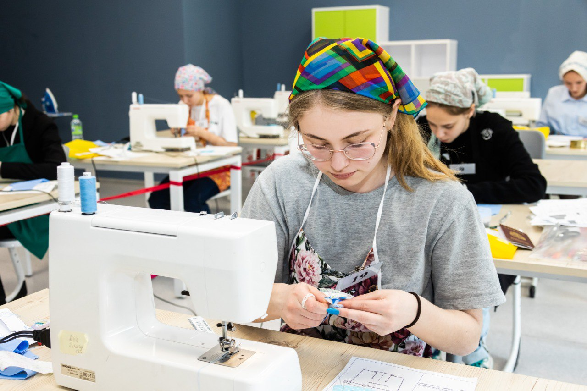
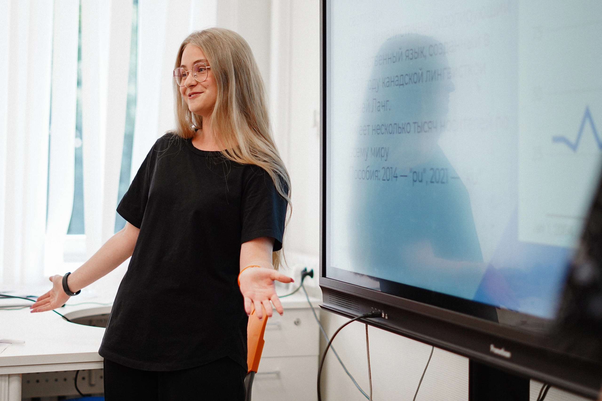

Чем я увлекаюсь?
Вообще, я очень разносторонний человек, и сейчас вы это поймете. В моей жизни всегда было много увлечений: шахматы, танцы, шитье, иностранные языки, криптография, баскетбол, кулинария и многое другое! Про самое основной расскажу на этой страничке.
Шитье

Моя любовь к созданию одежды началась еще в пятом классе, когда я впервые познакомилась с уроками труда. Забавно, что до знакомства со своей учительницей технологии я вообще ненавидела шить и считала, что у меня нет для этого нужных данных, "тяжелая рука" и вообще это все не для меня. Сейчас я уже смеюсь с этих мыслей: ведь дорога жизни в итоге привела меня аж на заключительный этап всероссийской олимпиады школьников по трудам! Я создала собственную коллекцию одежды, а после даже сшила мерч с эмблемой своего лингвистического класса.Лингвистика

Как вы могли подумать, все самые сильные увлечения и самая сильная любовь в моей жизни очень случайны. Так было и с лингвистикой: думаю, классическая история любого лингвиста. Так вот моя: я до 8 класса знать не знала, что такое эта ваша лингвистика и чем она занимается. И вот однажды я открыла сайт ОЦ "Сириус" в надежде обнаружить хоть какую-то программу, на которую я смогла бы съездить без достижений вроде Всеросса по биологии или математики. Мой глаз упал на лингвистику, и я подумала: "о, звучит легко! я же знаю один иностранный!". Надеюсь, вы улыбнулись, потому что как же я тогда ошибалась... И все же лингвистика не напугала меня обилием математики, логики и языовых тонкостей, а Сириус принял меня в свои объятия и навсегда поселился в сердце! Как и лингвистика)Танцы
 Что ж, а это, пожалуй, единственная неслучайность в этой подборке хобби! Я занимаюсь танцами 11 лет в ансамбле, и я очень люблю наш коллектив, нашего руководителя и наши поездки на всероссийские соревнования! Благодаря танцам я открыла для себя среди прочих три чудеснейших места России на букву "К": Казань, Карелию и Калининград! Последний город я люблю всем сердцем, быть может, даже так же сильно, как свой родной. Слева вот, собственно, фотография меня, моей сестры (она тоже в ансамбле) и моей мамы (и она тоже танцует!) в костюмах после выступления на одном из всероссийских конкурсов в Калининграде :)
Что ж, а это, пожалуй, единственная неслучайность в этой подборке хобби! Я занимаюсь танцами 11 лет в ансамбле, и я очень люблю наш коллектив, нашего руководителя и наши поездки на всероссийские соревнования! Благодаря танцам я открыла для себя среди прочих три чудеснейших места России на букву "К": Казань, Карелию и Калининград! Последний город я люблю всем сердцем, быть может, даже так же сильно, как свой родной. Слева вот, собственно, фотография меня, моей сестры (она тоже в ансамбле) и моей мамы (и она тоже танцует!) в костюмах после выступления на одном из всероссийских конкурсов в Калининграде :)
Мы танцуем все: от уличных танцев до народных. Для кого-то это кажется непрофессионализмом (как говорится, за двумя зайцами не угонишься), но для меня это всегда было возможностью попробовать себя в совершенно разных направлениях хореографии и прочувствовать каждый из стилей: пусть с ошибками, пусть не идеально чисто, пусть мало, но успеть почувствовать себя всюду. Побыть крестьянкой, отнимающей у подруг яблочко, или уличным гангстером, читающим рэп посреди шумного города. Для меня всегда было важным научиться чувствовать как можно больше и шире: и в моем ансамбле мне это точно удается!